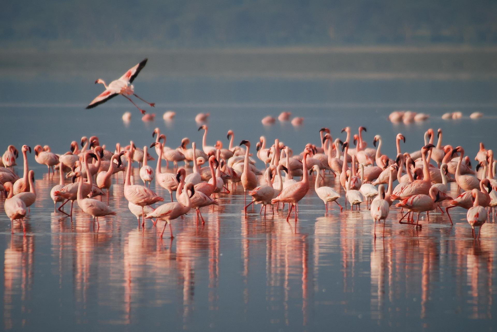
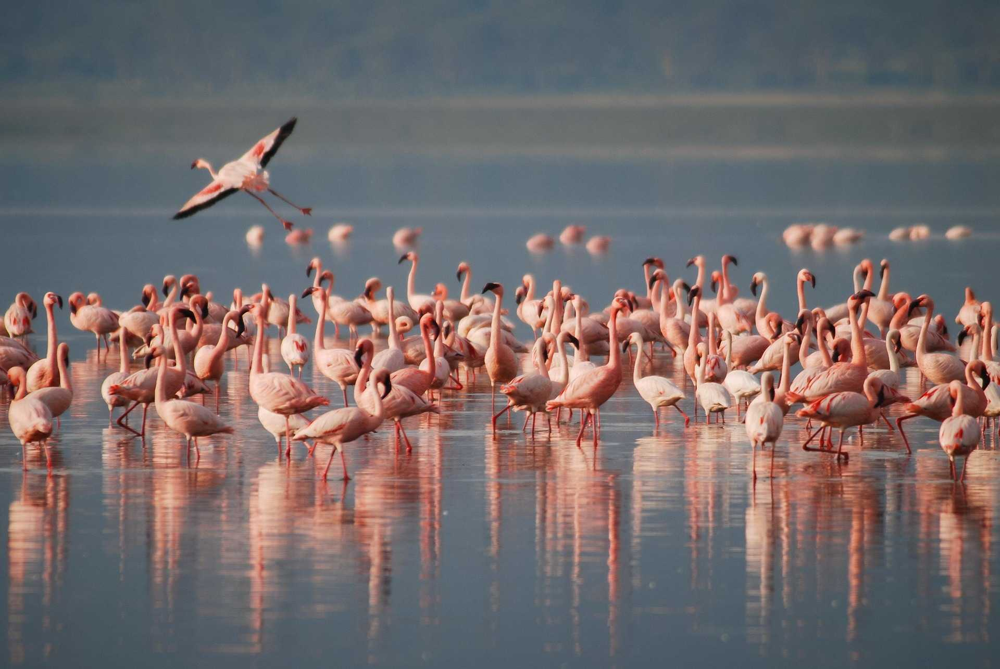
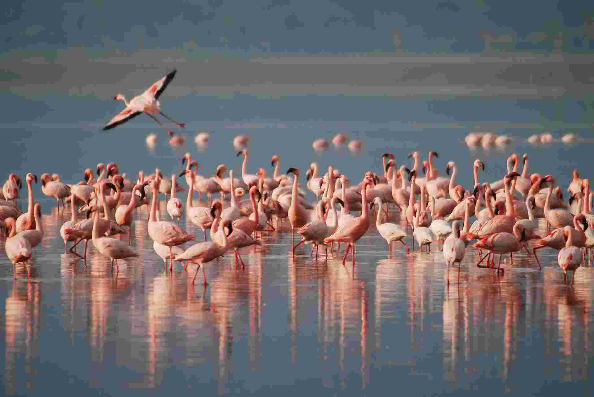
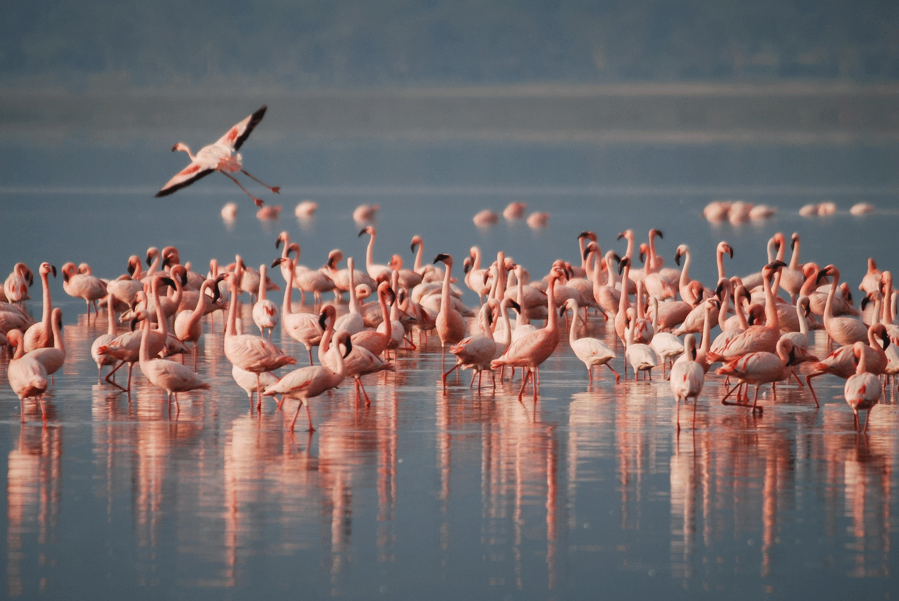

JPEG sens dubte, amb ella pots jugar amb la compressió per tal de reduir la mida.
Amb un 50% de compressió encara no és visible perdues de qualitat en la imatge.
Si, crec que seria a partir de 30% de compressió que podriem veure perdues clares de qualitat
Perdrem més qualitat de la que perdriem si ho fem d'una mateixa desada, a causa de la compressió perdrem menys qualitat si fem una desada de 50% a si fem dues de 25%